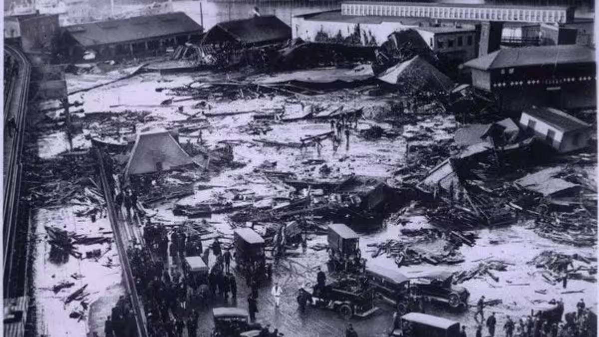

The London Beer Flood
The Afternoon of October 17, 1814: At the Meux & Co. Brewery in the heart of London, a massive iron hoop snapped off a 22-foot-tall wooden fermentation vat. The vat contained over 135,000 imperial gallons of fermenting brown porter ale. The sudden release of pressure caused a domino effect, rupturing several other enormous vats in the same building. In total, more than 323,000 gallons of beer burst through the brick walls of the brewery.

The tragedy occurred because the brewery was located in the St. Giles rookery—a dense, poverty-stricken slum where families lived in crowded basement apartments. A wave of beer and brick debris 15 feet high surged through the narrow streets. It flooded the basements, trapping residents who had no time to escape. Eight people were killed, including a mother and daughter having tea and a group of mourners at a wake. The tragedy was compounded by the fact that the "flood" was a thick, fermented liquid that made the ground impossibly slick, hindering rescue efforts as the buildings' foundations softened and collapsed into the sludge.
From Jury Ruling to Industrial Safety: The immediate strategy by the brewery was Legal Self-Preservation. Despite the clear evidence of a rusted iron hoop, the jury at the coroner's inquest ruled the event an "Act of God," meaning the victims' families received no compensation and the company was not held liable for the deaths.
Key Facts
Date: October 17, 1814
Location: St. Giles, London, England (Meux & Co. Brewery)
Casualties: 8 deaths
Cause: Industrial Structural Failure (Ruptured fermentation vats releasing over 323,000 gallons of beer into a high-density slum)
The Economic Salvage Strategy: The brewery faced bankruptcy due to the loss of the beer (on which they had already paid taxes). They successfully petitioned the British Parliament for a Tax Refund on the lost ale. This strategic government intervention saved the company but ignored the human cost.
The Engineering Shift: The disaster forced a gradual but permanent strategy shift in the brewing industry. Architects moved away from massive wooden vats held by iron hoops, transitioning to Lined Concrete and Stainless Steel tanks. This "Safety by Design" strategy ensured that a single mechanical failure could never again trigger a tidal wave of liquid in an urban center.
The London Beer Flood is a reminder of how "Low-Probability, High-Consequence" risks are often ignored until it is too late. It teaches us that industrial sites situated in high-density residential areas require a strategy of Buffer Zones. While the event sounds comical to modern ears, for the residents of St. Giles, it was a terrifying example of how industrial negligence can turn a common consumer product into a lethal force.